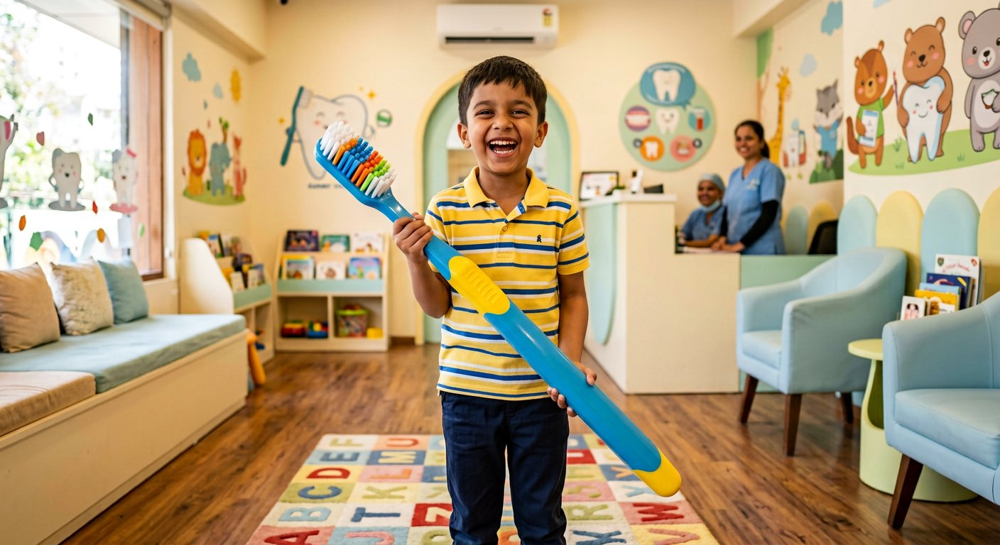
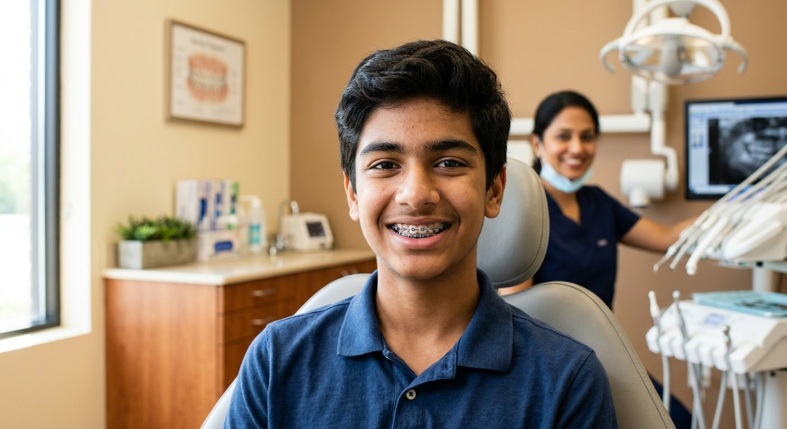
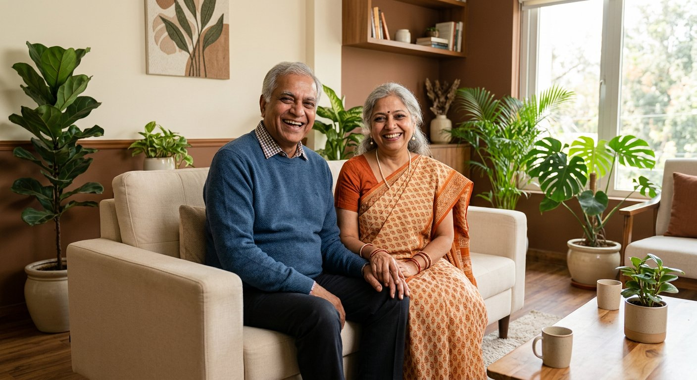

Dr. Samuel Shedrach is widely praised for truly painless root canal treatments — gentle anaesthesia, careful single-visit care where possible, and natural-looking crowns that restore full strength.
Gentle Dental Care
Narayanapura’s trusted home for gentle, painless dentistry by Dr. Samuel Shedrach — root canals, implants, braces & family care, rated 4.8★ by our patients.
Transform Your Smile ✳ with State-of-the art Dental Care 🦷
Gentle, honest dentistry led by Dr. Samuel Shedrach — painless root canals, implants, braces, wisdom-tooth surgery and complete family care behind Kothanur, Narayanapura.
Book Appointment → Visit us in Narayanapura, Bengaluru0Years in Healthcare
0Surgeries & Treatments
0Days Open a Week
0% Gentle Approach
Permanent, natural-feeling replacements for missing teeth — planned honestly and placed with precision for lasting function, comfort and aesthetics.
Orthodontic treatment for teens and adults — braces to correct bite issues, crowding and misaligned teeth, with clear guidance at every visit.
Oral & maxillofacial surgery including wisdom-tooth extraction — performed with precision, minimum-pain technique and careful after-care.
Fear-free dental care for children and complete care for the whole family — from a child’s first check-up to gentle treatment for elderly patients.
Complete everyday care — check-ups, cleaning & polishing, fillings, dentures and dental X-rays, explained clearly with honest, transparent advice.
Our Specialists
Led by Dr. Samuel Shedrach — highly recommended by patients for painless, patient-first treatment — with care across root canal, implants, orthodontics, oral surgery and family dentistry. Meet your doctor at the clinic, or find us on Google Maps ↗
Free DoctorConsultation
Not sure what your smile needs? Start with a consultation — examination, honest advice and a clear treatment plan with transparent pricing.
Get AppointmentWho We Help?

Kids
Children need special attention when it comes to dental care — gentle, fear-free visits while teeth and jaws are still developing.

Teenage
Teenagers may need orthodontic treatment to correct bite issues, crowding or misaligned teeth — braces and aligners included.

Adults
Adults may require implants, crowns, root canals, periodontics and oral surgery — complete care at every stage of life.
4.8★ Patient Reviews
Real feedback themes from patients who visit us in Narayanapura (rated 4.8 from 136+ ratings on Justdial). Read & review us on Google ↗
Visit Our Clinic
📍 Address
Agape Dental Clinic
Anjeneyappa Building, K Narayanapura Road,
Behind Kothanur,
Narayanapura, Bengaluru – 560077
13.0625009° N, 77.6485187° E
Get Directions ↗🕙 Clinic Hours
Monday – Sunday
11:00 AM – 5:00 PM
Open all 7 days (per Practo). Hours may vary — please confirm on Google Maps before visiting.
📞 Book via Google Maps
Tap below to open our Google Maps listing — call, get directions, or plan your visit to Dr. Samuel Shedrach.
Behind Kothanur, Narayanapura
Open Google Maps ↗